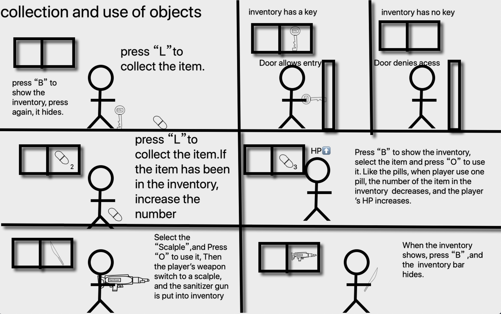

Acceptance criteria:
Criterion 1:
Criterion 2:
Acceptance criteria:
Criterion 1:
Criterion 2:
Acceptance criteria:
Criterion 1: If the item is a weapon, then convert the current weapon to that and put the current weapon into inventory.
Criterion 2: If the item is a pill, then decrease the number of “pills” item in the inventory. When the number turns to 0, that item disappears.
Criterion 3: If the item is a key, then unlock the door needed to open and the item disappears.